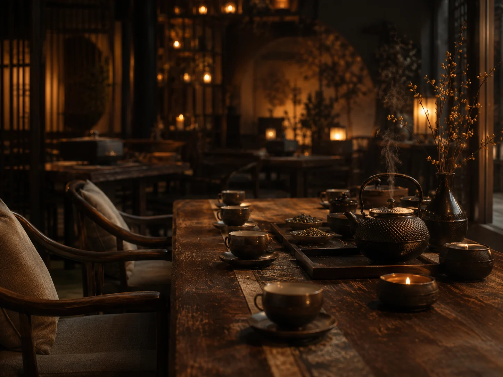
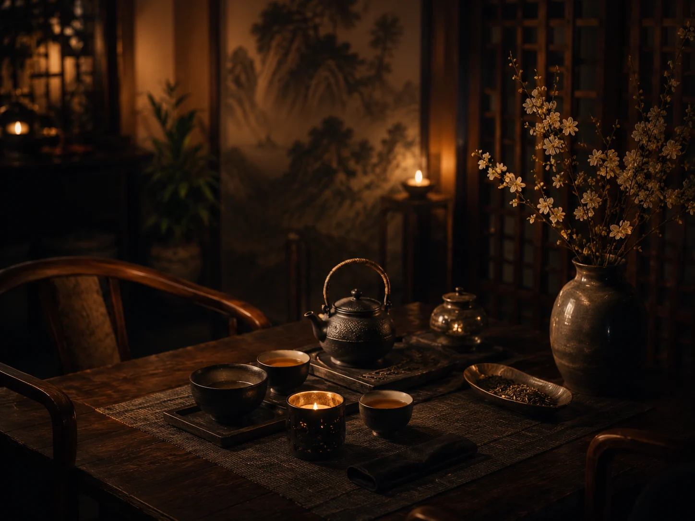
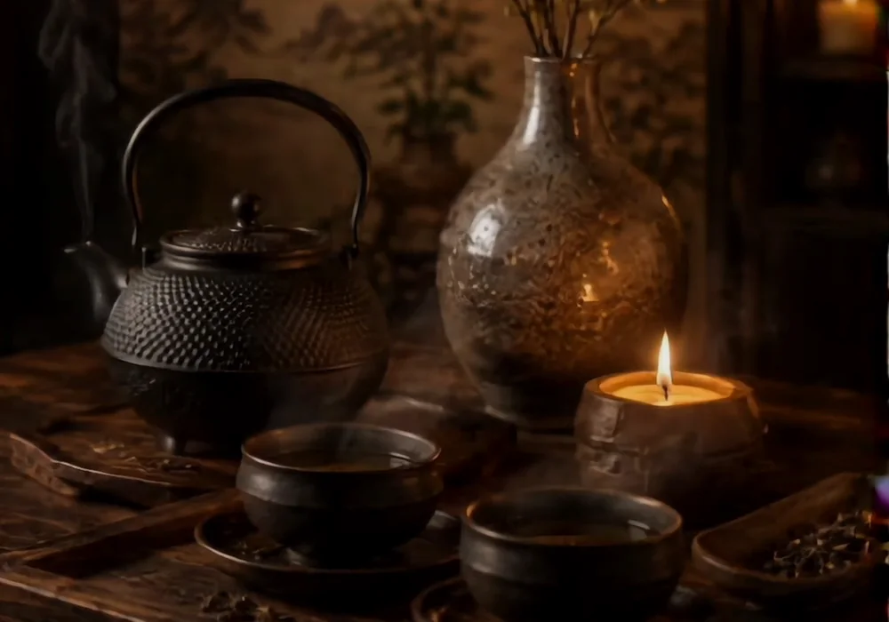
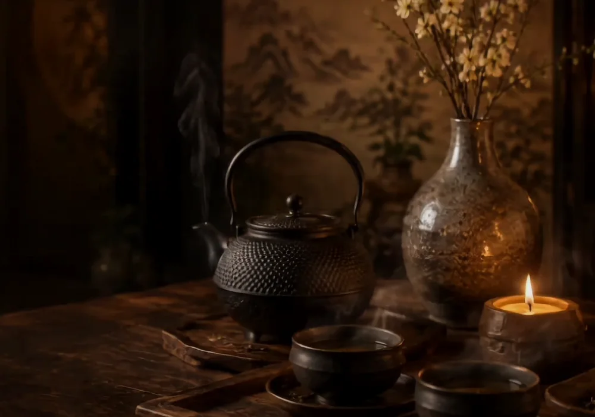

Первое знакомство
Подходит для тех, кто приходит впервые: один или два чая, спокойное объяснение и знакомство с посудой.
- Подбор чая по настроению
- Понятный рассказ без перегруза
- Формат для первого визита
от 1 800 ₽за церемонию
Чайная культура в центре Челябинска
Премиальный китайский чай, тёплый интерьер, внимательность к деталям и события, ради которых хочется задержаться подольше.
Сценарии визита
Первый визит, неспешная встреча вдвоём, чайный стол для компании, событие или подарок — сайт должен быстро приводить к записи.
Форматы церемоний
Без отдельной страницы: гость сразу видит, чем отличаются сценарии визита, сколько времени они занимают и как записаться.
Подходит для тех, кто приходит впервые: один или два чая, спокойное объяснение и знакомство с посудой.

Камерный формат для свидания, подарка или важного разговора в тихой атмосфере.

Если хочется собраться компанией, выбрать несколько чаёв и провести вечер в одном ритме.
Впервые на церемонии
Достаточно выбрать настроение: бодрее, спокойнее, мягче или насыщеннее. Остальное мастер подскажет на месте.
Расскажите, что любите в напитках, — предложим несколько вариантов.
Покажем посуду, проливы и правила ровно настолько, насколько вам интересно.
Церемония не обязана быть лекцией: можно просто пить чай и отдыхать.
Атмосфера
Визуальный блок про настроение пространства без отдельной страницы: всё остаётся на главной и помогает выбрать формат визита.

Для неспешных встреч, чайных столов и вечеров, где важны атмосфера и разговор.

Для двоих, тихого подарка или небольшого личного события в более спокойном ритме.
События
На главной — только актуальные события. На странице всех событий отдельно показаны ближайшие встречи и уже прошедшие вечера.
Все событияКамерный вечер живой музыки и чайного сопровождения.

Лёгкая разговорная практика и новые знакомства за общим чайным столом.

Понятный мастер-класс о температуре воды, посуде и базовых способах заваривания.
Отзывы гостей
На главной — адаптивный слайдер отзывов, а на отдельной странице — полная подборка и переходы к внешним источникам.
Все отзывыПодарочные сертификаты
Сертификат на двоих, на компанию или на выбранную сумму — красивый повод подарить встречу, а не вещь.
Выбрать сертификатВопросы перед визитом
Короткие ответы помогают снять лишние вопросы и не перегружать пользователя текстом на первом экране принятия решения.
Открыть все вопросы и ответыНет. Для первого визита достаточно рассказать, какое настроение и вкусы вам ближе. Мастер предложит несколько вариантов и объяснит всё простым языком.
Да. Можно выбрать чай, напиток или десерт и провести время в спокойной атмосфере без отдельной церемонии.
Для записей на отдельные форматы и события условия подтверждает администратор. На сайте предусмотрен сценарий с уточнением после заявки.
Да, для этого предусмотрены подарочные сертификаты на формат для двоих, компании или на произвольную сумму.
Контакты